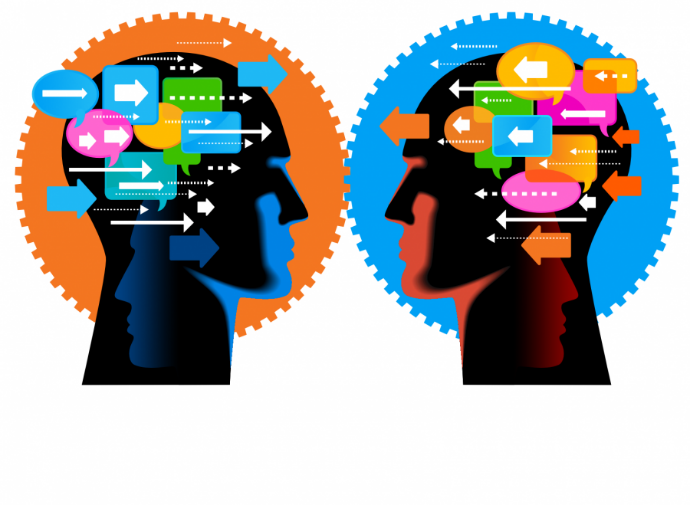

El pensamiento sistémico se basa en la idea de que todos los elementos de un sistema están interconectados. Esto significa que un cambio en una parte del sistema puede afectar a otras partes de maneras que no siempre son obvia.
El en siguiente apartado se encuentran los conceptos y correspondientes definiciones a la materia de "PENSAMIENTO SISTEMICO Y AUTOMATIZACION"
1. Interconexión:
2. Retroalimentación:
Los sistemas suelen tener bucles de retroalimentación, donde los resultados de un proceso se utilizan como entradas para el mismo proceso. Esto puede amplificar (retroalimentación positiva) o estabilizar (retroalimentación negativa) el comportamiento del sistema.

3. Emergencia:
Las propiedades emergentes son características del sistema que no se pueden predecir simplemente observando las partes individuales. Estas propiedades surgen de las interacciones entre los componentes del sistema.
4. Perspectiva Holística:
En lugar de centrarse en partes aisladas, el pensamiento sistémico adopta una visión global para entender cómo las partes interactúan y contribuyen al comportamiento del sistema en su conjunto.
5. Dinámica de Sistemas:
Este concepto se refiere al estudio de cómo los sistemas cambian con el tiempo, incluyendo los patrones de comportamiento y las tendencias a largo plaza.
6. Equifinalidad:
En los sistemas abiertos, un mismo estado final puede alcanzarse desde diferentes condiciones iniciales y por diferentes caminos.
7. Visión global:
: Se trata de adquirir una perspectiva amplia del sistema y sus componentes.
8. Interrelaciones:
En lugar de analizar elementos aislados, se enfoca en cómo estos interactúan y se influyen mutuamente.
9. Jerarquía:
Los sistemas tienen un orden jerárquico, donde cada elemento ocupa una posición específica dentro del sistema.
10. Limitaciones:
Todo sistema tiene controles que regulan su funcionamiento y duración.
11. Elementos:
Los componentes individuales que forman el sistema. Pueden ser materiales (como partes de una máquina) o conceptuales (como ideas en un sistema teórico).
12. Estructura:
La organización y disposición de los elementos dentro del sistema. La estructura define cómo se conectan y funcionan los componentes.
13. Entorno:
Todo lo que rodea al sistema y puede influir en él. Los sistemas no existen en aislamiento; interactúan con su entorno.
14. Propósito:
El objetivo o función principal del sistema. Cada sistema está diseñado para cumplir un propósito específico.
15. Homeostasis:
La capacidad del sistema para mantener su equilibrio interno a pesar de los cambios en el entorno.
16. Entropía:
La tendencia de los sistemas a desordenarse con el tiempo. La entropía mide el grado de desorden dentro del sistema.